Theory
The Metabolic Operating System (mOS) Hypothesis
Why do identical nutritional inputs give divergent outcomes? A control-theory account of nutrient response.
Prepared for Trends in Endocrinology & Metabolism
Founder & Managing Director · GiNOVA
Fifteen years in the food industry, fifteen in information technology. I work where food science, machine intelligence and strategy meet. My thesis is short: food is code.
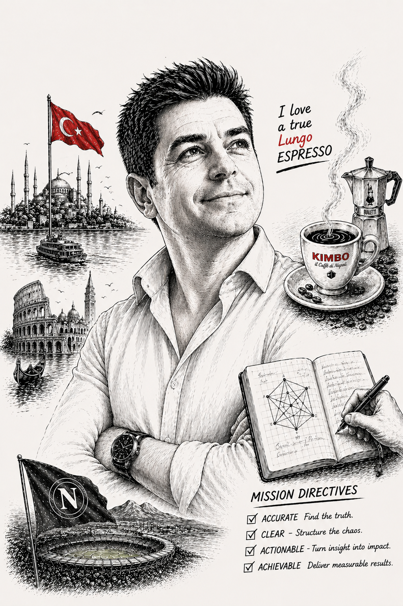
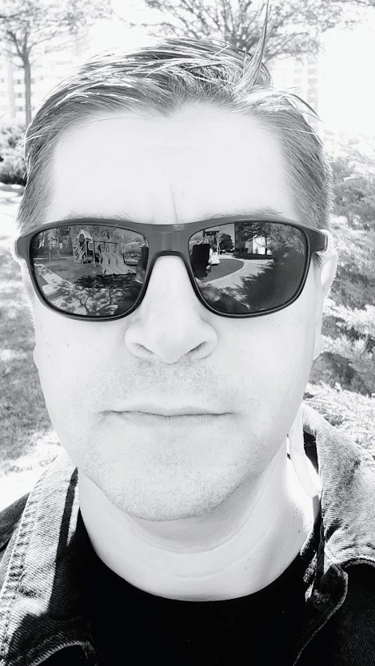
The founder
Trained as a food engineer at METU, Kunter spent fifteen years inside the food industry and fifteen more in information technology. Born in İzmir, at home in Ankara, recently a year in Naples. He founded GiNOVA to give hard decisions the rigour of engineering and the speed of generative AI.
The studio
GiNOVA applies generative intelligence to complex business problems, at a speed and price that make the decision worth more than the advice. Every engagement starts with a small, paid, clearly scoped step.
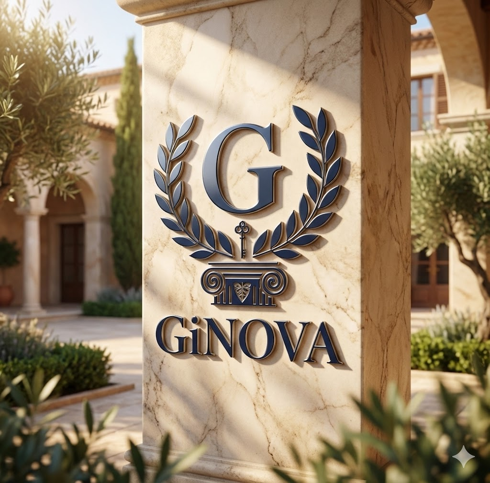
Product, process and investment questions: capacity, equipment and how a line should actually run.
Starts with a scoped engineering consult
Enterprise generative AI and board reporting, built so leadership can act on it.
Starts with a paid diagnostic and a Decision Brief
Sound, film and brand stories, made with the same tools the consultancy advises on.
Starts with a sound or motion commission
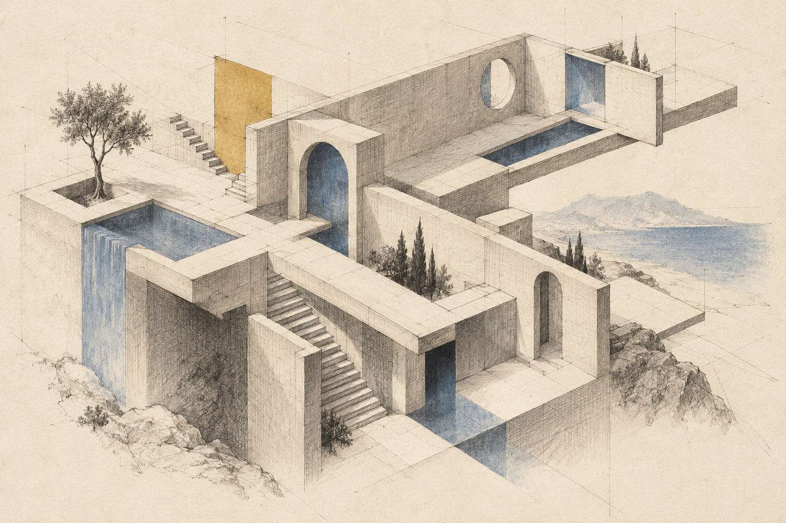
The method
A governed process for engineering better decisions.
GiNOVA’s GATE Protocol structures complex decision-making through a sequence of context engineering, strategic orchestration, independent research, adversarial examination and evidence synthesis.
The process begins by defining the decision before committing resources. It then develops an independent evidence base, subjects preliminary findings to critical challenge, integrates the resulting evidence and conducts a second adversarial review before producing the final executive output.
Gate 0
Define the mission, decision question, constraints and unbiased context.
Gate 1
Coordinate the analytical process and maintain coherence.
Gate 2
Gather and evaluate external evidence.
Gate 3
Challenge assumptions, reasoning and preliminary conclusions.
Gate 4
Expand the evidence base and construct a traceable evidence structure.
Gate 5
Independently challenge the integrated analysis.
Final
Produce a structured, decision-ready deliverable.
Each stage has a defined purpose. Evidence is distinguished from assumption; hypotheses from verified findings; and analytical conclusions from decisions reserved for accountable human authorities.
The protocol is designed to remain independent of any particular AI platform or software provider.
The objective is straightforward: better-founded decisions, traceable reasoning and more disciplined allocation of resources.
We work at the level of constraints, not recommendations.From the GiNOVA operating doctrine
The research
A research programme with Prof. Dr. Fatih Yıldız, METU
The same meal does not produce the same metabolic result in every person, or even in the same person on different days. Nutrients act as signals the body evaluates in context: circadian phase, inflammatory state and metabolic history decide which pathways run.
If nutrients are signals, food can be engineered for the response it should trigger.
Move the sliders. A nutrient signal only triggers a response while it stays above the body’s threshold. Switch to an older adult and watch the same input struggle to cross it.
Illustrative model in arbitrary units. Not dietary advice.
“Same lunch, darling. Entirely different signal.”
Theory
Why do identical nutritional inputs give divergent outcomes? A control-theory account of nutrient response.
Prepared for Trends in Endocrinology & Metabolism
Method
Designing products for defined metabolic outcomes: a signal vocabulary, the Synergistic Signal Index (SSI) and matrix architecture as the design lever.
Submitted to Journal of Food Science · revision resuming
Governance
When is a functional food claim valid? A minimum substantiation floor: context, reliability across conditions, disclosed failure modes.
Ready for submission
Longevity
Older adults respond less to the same nutrient input even when delivery is intact. The mOS view reads this as a change in the conditions under which the body accepts a signal, not a simple loss of capacity. Longevity is where the signal framework matters most.
Conference abstract · 2026 · with Prof. Dr. Fatih Yıldız
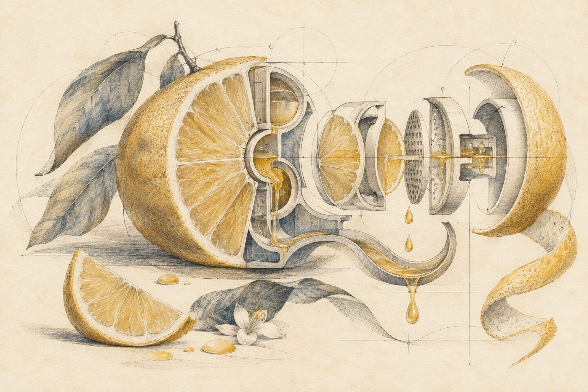
Book in progress · in Turkish
Substrattan sinyale, metabolik kontrol mimarisi altında beslenme
From substrate to signal: nutrition under a metabolic control architecture. The book-length account of the metabolism studies behind the papers, written with Prof. Dr. Fatih Yıldız.
The brands
Concepts in development. None of these brands has launched yet.
The nutrition system
Gıda Biyomiksleri
BIOMIKS is the name for the system itself, not a single product. Food structure and digestion kinetics are treated as an engineering discipline: matrices are built and sequenced for a defined response, and every formula is mapped for viscosity, nutrient density and postprandial behaviour.
Planned umbrella organisation
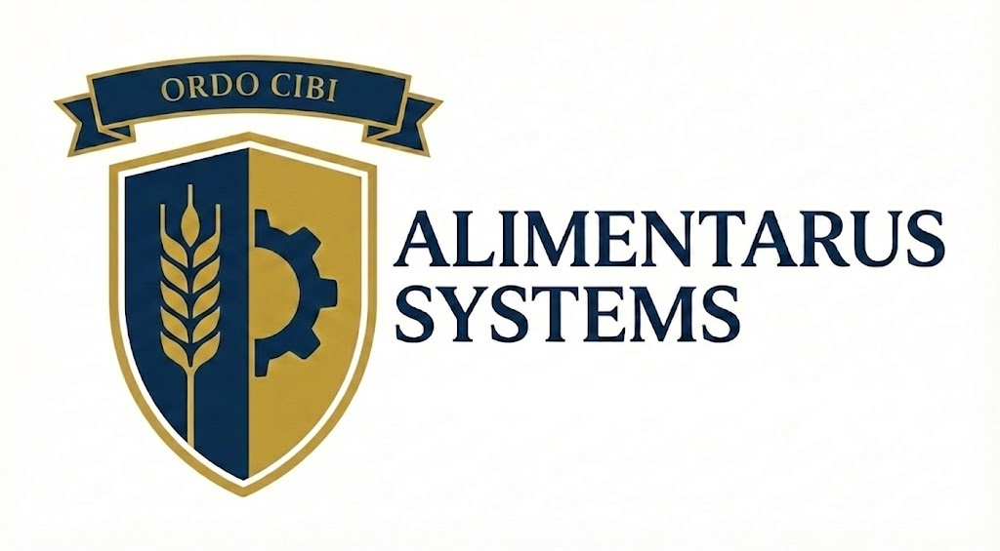
Ordo cibi · mensura, structura, regimen
Planned as the parent of every product, and of the goods and services still to come. Alimentarus is meant to carry BIOMIKS into two branches: human nutrition and animal metabolism.
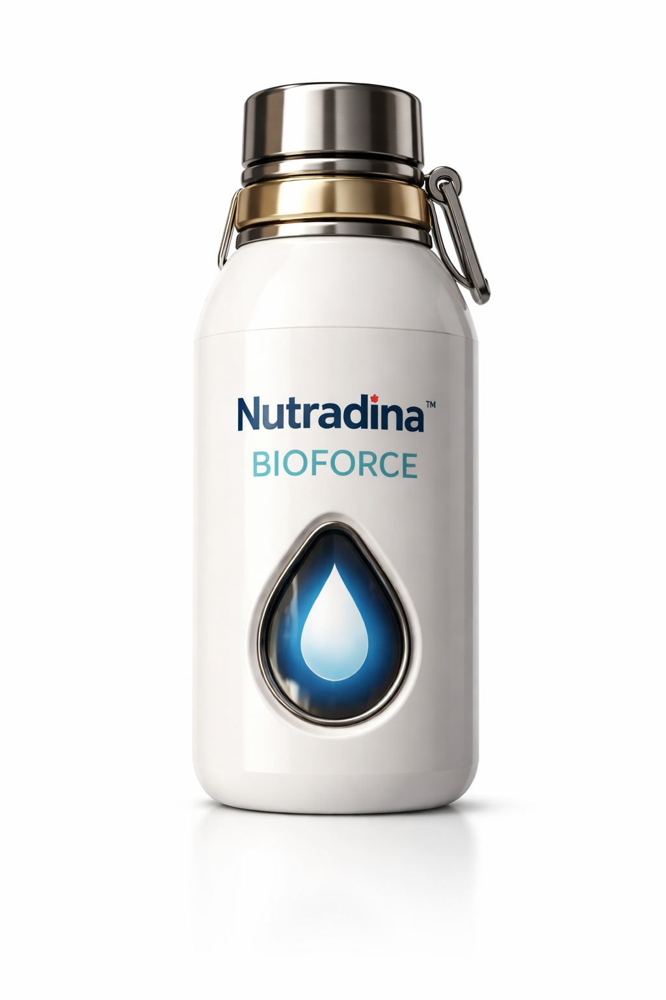
Human nutrition · concept since 2015
Signal-based nutrition. A consumer concept, first sketched in 2015 as Nutradyne, with product lines being engineered around the signal framework.
nutradina.it
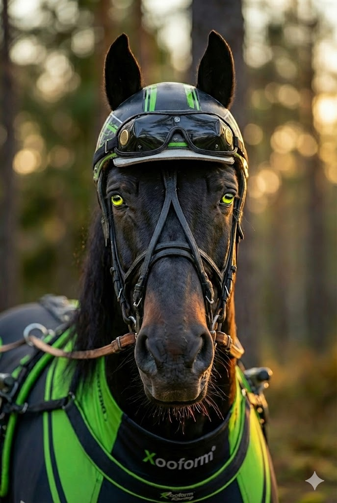
Animal metabolism
Signal-based nutrition for animal metabolism, from companion animals (Xooform Performa) to racehorses.
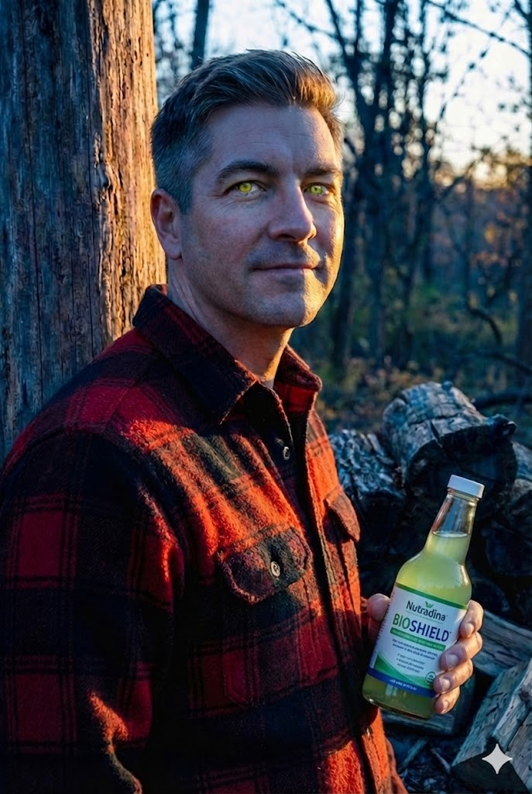
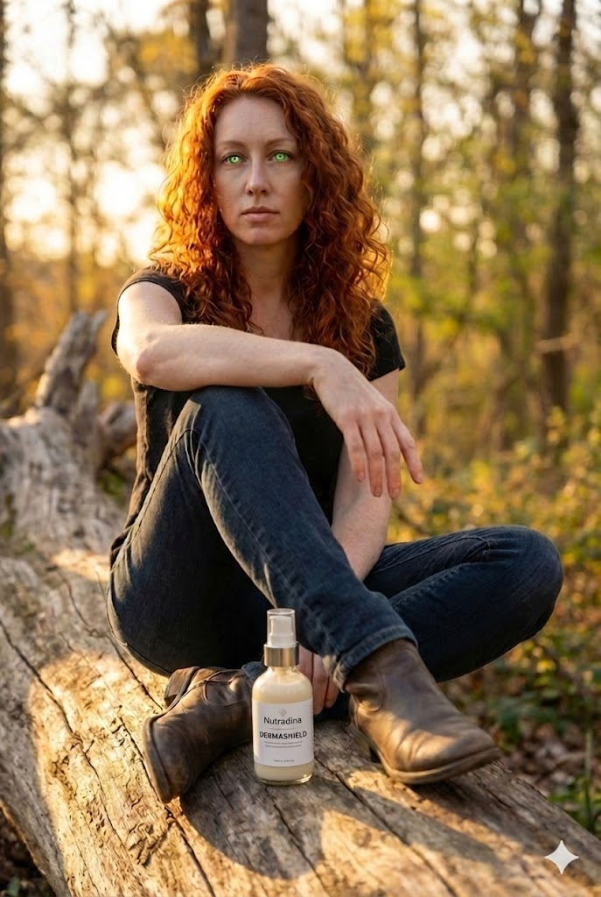
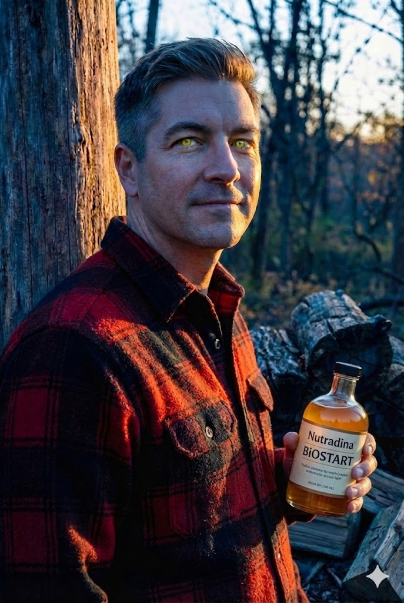
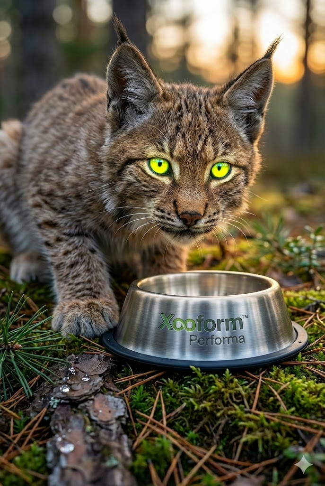
Concept imagery created with generative tools at GiNOVA Labs. Models are not real people.
No claim of validated product efficacy is made.
Films
Three commercial concepts by GiNOVA Labs: chess, football and a cinematic BIOFORCE scenario.
Creative concept films. Visual effects depict imagined outcomes, not product performance.
Sound
Original music from the SoundLab at GiNOVA Labs, written for the brands and the films.
Writing
On Medium, in English and Turkish.
Press kit
Available in English, Turkish and Italian.
Founder and Managing Director of GiNOVA. 15 years in food, 15 in IT. Writing on food systems, geopolitics and machine intelligence. Food is code.
Kunter Ilalan is the founder and managing director of GiNOVA, a Turkish engineering and consultancy firm that applies generative intelligence to complex business problems. A METU-trained food engineer, he spent fifteen years in the food industry and fifteen in information technology. His essays in Food Strategy, Future Sense and Gıda Stratejisi treat food as a signalling system and a source of national power, and ask what changes when AI becomes a working collaborator.
Kunter Ilalan is the founder and managing director of GiNOVA Mühendislik ve Danışmanlık A.Ş. He holds a BSc in Food Engineering from Middle East Technical University (METU) and has spent fifteen years in the food industry and fifteen in information technology. Born in İzmir, he has lived most of his life in Ankara, with a recent year in Naples. He speaks Turkish, English and Italian, and some German. The firm works across three divisions: engineering consultancy on products, processes and investments; enterprise generative AI and board reporting; and MediaLab™, which produces sound, film and brand stories. Every engagement starts with a small, paid, clearly scoped step, such as a diagnostic that ends in a Decision Brief.
As a writer, Ilalan works where food science, geopolitics and machine logic meet. His essays argue that nutrients act as molecular instructions rather than simple fuel, that preservation and supply are instruments of national power, and that AI is turning from tool into collaborator. He publishes in English and Turkish.
With Prof. Dr. Fatih Yıldız of METU, he leads a research programme on signal-based nutrition: the Metabolic Operating System hypothesis, a framework for signal-based food engineering, and a substantiation standard for functional food claims. The work extends to longevity, feeds a book in progress, Beslenme 2.0, and underpins BIOMIKS, a nutrition system of controlled food matrices now in development. Alimentarus Systems, the planned umbrella organisation, is to carry it into Nutradina™, a human-nutrition concept he started in 2015, and Xooform™, for animal metabolism.
GiNOVA Kurucusu ve Genel Müdürü. Gıdada 15, bilişimde 15 yıl. Gıda sistemleri, jeopolitik ve makine zekâsı üzerine yazıyor. Gıda bir koddur.
Kunter Ilalan, karmaşık iş problemlerine üretken yapay zekâ ile çözüm geliştiren GiNOVA Mühendislik ve Danışmanlık A.Ş.’nin kurucusu ve genel müdürüdür. ODTÜ Gıda Mühendisliği mezunudur; on beş yılı gıda sektöründe, on beş yılı bilişimde geçmiştir. Gıda Stratejisi, Food Strategy ve Future Sense’te yayımlanan yazılarında gıdayı bir sinyal sistemi ve ulusal güç kaynağı olarak ele alıyor; yapay zekânın bir çalışma ortağına dönüşmesinin neleri değiştirdiğini sorguluyor.
Kunter Ilalan, GiNOVA Mühendislik ve Danışmanlık A.Ş.’nin kurucusu ve genel müdürüdür. ODTÜ Gıda Mühendisliği lisans mezunudur; on beş yılını gıda sektöründe, on beş yılını bilişimde geçirmiştir. İzmir doğumludur; hayatının büyük bölümünü Ankara’da geçirmiş, yakın zamanda bir yıl Napoli’de yaşamıştır. Türkçe, İngilizce ve İtalyanca konuşur; Almanca da bilir. GiNOVA üç birimle çalışır: ürün, süreç ve yatırım sorularına yönelik mühendislik danışmanlığı; kurumsal üretken yapay zekâ ve yönetim kurulu raporlaması; ses, film ve marka hikâyeleri üreten MediaLab™. Her proje, Karar Özeti ile sonuçlanan bir ön tanı gibi küçük, ücretli ve kapsamı net bir adımla başlar.
Yazar olarak gıda bilimi, jeopolitik ve makine mantığının kesiştiği alanda çalışıyor. Yazılarında besinlerin basit bir yakıt değil moleküler talimatlar gibi davrandığını, gıdanın korunması ve tedarikinin ulusal güç aracı olduğunu ve yapay zekânın araçtan ortağa dönüştüğünü savunuyor. Türkçe ve İngilizce yayın yapıyor.
ODTÜ’den Prof. Dr. Fatih Yıldız ile birlikte sinyal temelli beslenme üzerine bir araştırma programı yürütüyor: Metabolik İşletim Sistemi (mOS) hipotezi, sinyal temelli gıda mühendisliği çerçevesi ve fonksiyonel gıda beyanları için bir doğrulama standardı. Çalışmalar uzun ömür (longevity) alanına uzanıyor; yazımı süren Beslenme 2.0 kitabını, geliştirme aşamasındaki, kontrollü gıda matrislerinden oluşan BIOMIKS beslenme sistemini besliyor. Planlanan çatı kuruluş Alimentarus Systems’in, bu sistemi Kunter’in 2015’te başlattığı insan beslenmesi konsepti Nutradina™ ve hayvan metabolizmasına yönelik Xooform™ ile ürüne dönüştürmesi hedefleniyor.
Fondatore e Direttore Generale di GiNOVA. 15 anni nel cibo, 15 nell’informatica. Scrive di sistemi alimentari, geopolitica e intelligenza artificiale. Il cibo è codice.
Kunter Ilalan è il fondatore e direttore generale di GiNOVA, società turca di ingegneria e consulenza che applica l’intelligenza generativa a problemi aziendali complessi. Ingegnere alimentare formatosi al METU, ha trascorso quindici anni nell’industria alimentare e quindici nell’informatica. Nei suoi saggi su Food Strategy, Future Sense e Gıda Stratejisi tratta il cibo come sistema di segnali e fonte di potere nazionale, e si chiede cosa cambi quando l’IA diventa un vero collaboratore.
Kunter Ilalan è il fondatore e direttore generale di GiNOVA Mühendislik ve Danışmanlık A.Ş. Laureato in Ingegneria alimentare alla Middle East Technical University (METU), ha trascorso quindici anni nell’industria alimentare e quindici nell’informatica. Nato a İzmir, ha vissuto gran parte della sua vita ad Ankara e di recente un anno a Napoli. Parla turco, inglese e italiano, e un po’ di tedesco. GiNOVA lavora su tre divisioni: consulenza ingegneristica su prodotti, processi e investimenti; IA generativa d’impresa e reportistica per i consigli di amministrazione; e MediaLab™, che produce suono, film e storie di marca. Ogni incarico inizia con un passo piccolo, retribuito e ben definito, come una diagnosi che si conclude con un Decision Brief.
Come autore, Ilalan lavora dove si incontrano scienza degli alimenti, geopolitica e logica delle macchine. I suoi saggi sostengono che i nutrienti agiscono come istruzioni molecolari più che come semplice carburante, che conservazione e approvvigionamento sono strumenti di potere nazionale, e che l’IA sta passando da strumento a collaboratore. Pubblica in inglese e in turco.
Con il Prof. Dr. Fatih Yıldız del METU guida un programma di ricerca sulla nutrizione basata sul segnale: l’ipotesi del Metabolic Operating System, un quadro per l’ingegneria alimentare basata sul segnale e uno standard di prova per i claim sugli alimenti funzionali. Il lavoro si estende alla longevità, alimenta un libro in lavorazione, Beslenme 2.0, ed è alla base di BIOMIKS, un sistema nutrizionale di matrici alimentari controllate in fase di sviluppo. Alimentarus Systems, l’organizzazione madre in progetto, dovrà portarlo in Nutradina™, concept di nutrizione umana nato nel 2015, e in Xooform™, dedicato al metabolismo animale.